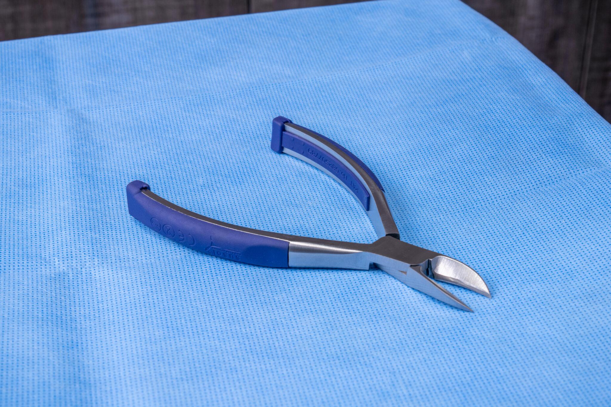

Tap a marker on the instrument to zoom in on that feature. (Prototype using a product photo — the same interaction works on a real 3D model if we get the file.)

This single-use nipper is precision-built for a clean cut, comfortable grip, and ready-to-use sterility. Select a point on the instrument — or a feature below — to see how.